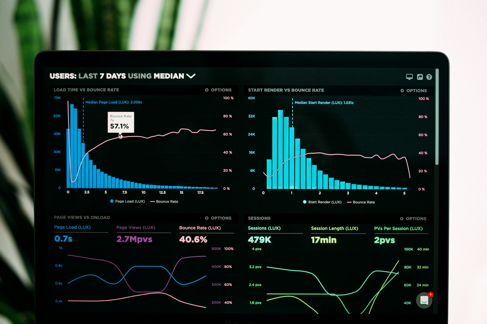

SPSS YARDIMI İSTATİSTİK MERKEZİ
SPSS Yardımı
İstatistik Merkezi
Profesyonel SPSS İstatistik Analizi Danışmanlığı
SPSS Yardımı İstatistik Merkezi olarak uzman SPSS istatistik analizi hizmetlerimizle öğrenci ve akademisyenlerin yanındayız.
IBM SPSS kullanarak lisans, yüksek lisans, doktora ve akademik dergi çalışmaları için profesyonel istatistik analizleri yapıyoruz.
Analiz sonuçlarını akademik formatta tablolarla oluşturuyor, yorumlayarak anlaşılır biçimde raporluyoruz.
Ücretsiz rehberlerden profesyonel danışmanlığa.
Ücretli hizmetlerimizden önce, uzmanlığımızı tanımanız için ücretsiz yayınladığımız 100’den fazla SPSS analizi rehberine göz atabilirsiniz. Rehberler bilimsel literatüre uygun, özgün içerik ve ekran görüntüleriyle hazırlanmıştır.
Türkçe ve İngilizce SPSS analizi hizmetimiz mevcuttur. Kurucumuz Deniz Şavkay tarafından kurulduğumuz günden bu yana öğrenci ve akademisyenlere akademik standartlarda destek sunuyoruz.
Ödev yapma veya tez yazma gibi etik dışı işler yapmıyoruz. İstatistik analizi sürecinde öğrenmenize ve çalışmanızı başarıyla yürütmenize destek oluyoruz.İletişime geçip ücret teklifi alın
İSTATİSTİK DANIŞMANLIĞI
SPSS Analizi Danışmanlık Hizmetleri
Profesyonel SPSS danışmanlığı hizmetimizi istatistiksel analiz yapmak isteyen üniversite öğrencileri ve akademisyenlere sunuyoruz.
Bitirme tezi veya dergi makalesi için istatistik danışmanlığı, analiz sürecinin bütün aşamalarını kapsar. Verilerinizi doğru şekilde analiz edip yorumlamanıza katkıda bulunuyoruz.
- 01SPSS ile istatistiksel veri analizi
- 02APA stili raporlama
- 03Özel ders
- 04Anket hazırlama
- 05SPSS veri girişi
- 06Veri görselleştirme
- 07Ölçek geliştirme
- 08Sosyal bilimler ve biyoistatistik
- 09AMOS doğrulayıcı faktör analizi
- 10AMOS yapısal eşitlik modeli


AKADEMİK ÇALIŞMALAR
Tez & Makale İçin SPSS Analizi
Profesyonel SPSS analiz ve raporlama hizmetlerimiz, öğrencilerin tez ve akademisyenlerin makale çalışmalarındaki veri analizini kapsar.
Verileri SPSS ile analiz ediyor; sonuçları tablolar ve grafiklerle zenginleştiriyor, akademik kılavuzlara uygun şekilde raporluyoruz.
- Lisans tez analizi
- Yüksek lisans tez analizi
- Doktora tez analizi
- Tıpta uzmanlık tez analizi
- Diş hekimliği tez analizi
- Dergi makalesi analizi
UYGULAMALI ÖĞRENME
SPSS Eğitimi
Üniversite öğrencileri, akademisyenler ve özel sektör çalışanları için özelleştirilmiş SPSS eğitimi sunuyoruz. Teorik içerik ve uygulamalı pratikle veri analizi sürecini öğrenmenize yardımcı oluyoruz.
Dersler çoğunlukla çevrimiçi yapılır; isteğe bağlı olarak İstanbul’da yüz yüze eğitim de verilebilir. Temel ve ileri seviye eğitimler ile belirli konulara yönelik özel ders seçenekleri vardır.
BİRLİKTE ÇALIŞMAK
Neden Biz?
Sosyal Bilimler ve Sağlık Bilimleri alanındaki 6+ yıllık tecrübemizle etik değerlere bağlı destek sunuyoruz.
SPSS konusunda yüzlerce öğrenci ve onlarca akademisyene yol gösterdik.
BİZE DANIŞIN
Bizimle İletişime Geçin
SPSS analizi, eğitim veya danışmanlık ihtiyaçlarınızı paylaşın; size en uygun çözümü birlikte değerlendirelim.
WhatsApp üzerinden ulaşınMERKEZİMİZİ TANIYIN
Hakkımızda
SPSS Yardımı İstatistik Merkezi, öğrenciler ve akademisyenler için tez, proje ve makale çalışmalarına yönelik analiz, raporlama ve danışmanlık desteği sunar.
Türkiye genelinde çevrimiçi hizmet veriyoruz. Kurumsal istatistik ve analiz hizmetlerimiz hakkında Meta İstatistik sitesinden bilgi alabilirsiniz.
YÖNÜMÜZ
Vizyon
Çözüm odaklı yaklaşımla bilimsel araştırmalara değer katmak ve müşterilerimize yüksek standartta destek sağlamaktır.
ÇALIŞMA İLKELERİMİZ
Misyon
Bilimsel disiplin ve etik kuralları gözeterek istatistiksel analiz, raporlama ve eğitim hizmetleri sunuyoruz.
KURUCUMUZ HAKKINDA
Deniz Şavkay
Boğaziçi Üniversitesi Genetik lisans ve SWPS Üniversitesi Psikoloji yüksek lisans mezunuyum. İstatistikle akademik eğitimim sırasında tanıştım; bugün veri analizi ve raporlama alanında çalışıyorum. LinkedIn profilimi burada bulabilirsiniz.
SPSS Yardımı’nı, üniversite öğrencilerinin Türkçe ve anlaşılır kaynaklara erişebilmesi amacıyla kurdum. Sosyal ve yaşam bilimlerinde çalışmalarınızı bilimsel bağlam içinde yürütmenize destek oluyorum.
YouTube kanalımda akademik yaşam ve SPSS analizleri üzerine videolar paylaşıyorum.
ÇALIŞMA ANLAYIŞIMIZ
SPSS Yardımı web sitesinin kalitesi nereden geliyor?
- Uzmanlık: Sosyal Bilimler ve Yaşam Bilimleri akademik geçmişiyle farklı alanlarda analiz desteği.
- Güncel ve kaliteli içerik: Sade, anlaşılır ve görsellerle desteklenen rehberler.
- Samimi iletişim: Bilimsel standartları gözeten açık ve güvenilir danışmanlık.
BİZE ULAŞIN
İletişim
Uzman İstatistik Desteğine Ulaşın
İstatistiksel veri analizi, SPSS danışmanlığı veya eğitim hizmetleriyle ilgili sorularınızı memnuniyetle yanıtlarız.
Bilgi ve destek talepleriniz için bize ulaşın.